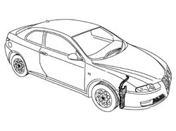
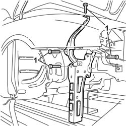
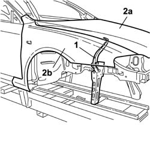
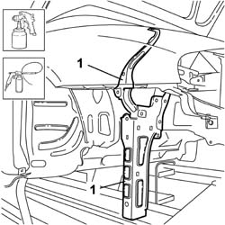

7210A30 R.R. FRONT WING MOUNTING BRACKET
- Path
- Procedures > 72 PANELS AND FRAME > 7210 REMOVING REFITTING > 7210A STRUCTURAL ELEMENTS (FRONT PART) > 7210A30 R.R. FRONT WING MOUNTING BRACKET
- Kind
- repair procedure (removal / refitting; the operation number is the code)
- Applies to
- all engines; all production periods
- Interactive page
- https://sloeber94.github.io/elrnDB-aGt/en/#/125002022
Applies to: all engines; all production periods
 Removing
Removing
 Refitting
Refitting- Check that the components connected are not distorted by checking the bodyshell alignment measurements using suitable equipment (gauges, templates or jigs).
- Carry out any bodyshell straightening operations before removing the component.

Applies to: all engines; all production periods
- Undo the fixing bolts shown in the diagram.
- Remove the side bracket from the vehicle.

Applies to: all engines; all production periods
Refitting
Removing- Temporarily fasten the side bracket to the vehicle.
- Check the alignment and the uniformity of the gap between the bonnet lid (2a) and the front wing (2b).
- Remove the components fitted previously.

Applies to: all engines; all production periods
- Paint the front bracket (follow the recommended procedure).
- Proceed with the waxing stage.
